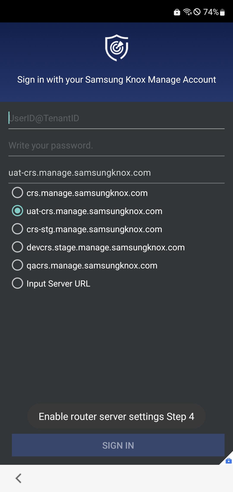

Get started with UAT
Last updated November 17th, 2023
If you are an existing customer with active Samsung Knox account, you will need to register once again for UAT as it is a separate isolated environment. Ensure to use the same email addressed you have used in the production environment to register for UAT, so that your account approval can be expedited.
Eligibility for UAT varies depending on your region or country.
UAT environment can be distinguished by its URL which will always include uat in the URL path. For example:
uat-central.samsungknox.com
Once you register for the Knox UAT environment, you can continue to access even after the production release. You will not have to register again for the next UAT period and can continue to test with the enrolled devices in UAT.
Create your Knox account for UAT
- Go to https://uat-www2.samsungknox.com/en/register.
- Follow the instructions in Create a Samsung Knox account. Make sure to reuse the email address you registered for the production instance, so that the Samsung team can expedite your approval.
- Wait for approval from the Samsung team. You will be notified by email once your account is approved and ready for use.
Manage your license
When you register for UAT Knox Admin Portal, a trial Knox Suite license key is automatically generated. If you want to generate the trial license keys for any individual Knox solutions, you can generate them from their respective console. Note that the trial license key for UAT:
- Has maximum of 10 seats
- Is valid for 1 year (12 months)
- Can’t be used in any Knox production environment.
Check your license
After your trial license key is automatically generated, please verify that your trial license is properly applied:
- On the Knox Admin Portal, go to Licenses and confirm that the new Knox Suite trial license is present in your list of licenses.
For more help with administering your licenses, see Manage Knox licenses in the Knox Admin Portal documentation.
Upload your devices
You can upload your device with two methods:
- (Preferred) You can simply raise a ticket to have us upload the devices for you — just provide us the device IMEIs or serial number. Please follow the regular process of submitting support tickets. Ensure to include [UAT] in the ticket subject/title.
- If your Knox cloud solution supports it (for example, Knox E-FOTA, Knox Asset Intelligence), you can directly upload a CSV file of the device IMEIs from the Knox Admin Portal.
Please note that your device should be:
- A supported device running an appropriate Knox version.
- Running on Android 13 or higher
- Knox Manage, Knox E-FOTA, and Knox Asset Intelligence can be used regardless of the Android version if you install the client manually
- Not currently registered and in use in a production environment
- Galaxy S23 or newer (preloaded with Android 13) to be used for Knox Guard
Enroll your devices to UAT client
Once the client is enrolled successfully, it will be updated automatically when a new client is ready for the next release depending on each service’s client update policy. Please note that:
- For OOBE client enrolment, the device should be running on Android 13
- Play store download is not supported
- If the device is registered in UAT, UAT client will be downloaded. Similarly, if the device is registered in Production, Production client will be enrolled. As such, ensure that your device is not registered in Production to be enrolled in UAT
OOBE enrollment
If you enroll devices with OOBE, the client is automatically installed during the enrollment.
Knox Manage
-
When enrolling a fully managed device, the device user must enter afw#knoxmanagealpha on the Google Account setup screen to download the Knox Manage UAT client.
-
During enrollment, when the flow reaches the sign-in screen of the Knox Manage agent, before signing in, the device user must select the Knox Manage server that belongs to the UAT:
-
Tap Sign in with your Samsung Knox Manage Account five times to show the list of Knox Manage servers.
-
Select uat-crs.manage.samsungknox.com.

-
Sign in with the Knox Manage account like normal.
-
Manual enrollment
You can download the UAT client from CDN and install it manually. Knox Manage, Knox E-FOTA, and Knox Asset Intelligence supports manual client enrollment.
On this page
Is this page helpful?